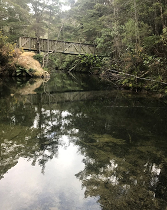
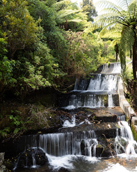
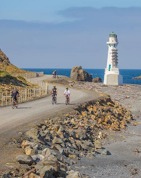
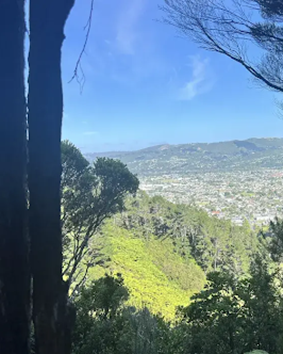

Several tracks lead to Butterfly Creek and can be stitched together to make pleasing loops. Paths are well graded and suitable for nearly all abilities, and seats are placed at obvious viewpoints. The ascent gains 200m in little more than 1km.
The path passes through truly magnificent stands of mamaku – as well as a few gigantic kahikatea – and comes to a T-junction. Turn left for an easy fifteen-minute stroll to the large picnic area. Although this is known as Butterfly Creek picnic area, it is actually sited on Gollans Stream. There is also a swimming hole where you can go for a dip.
The track begins at the Oakleigh Street entrance to the park. This one-hour loop can be walked in either direction. It features an easy descent to the dam, followed by a steady climb back up through beautiful native bush.
Along the way, you’ll be surrounded by abundant birdlife, including tūī, pīwakawaka, and kererū. The track is also lined with impressive nīkau palms, adding to the lush atmosphere.
The well-maintained, wide track is in excellent condition, making for an enjoyable walk. Dogs are permitted but must be kept on a lead at all times.


Pencarrow Coast Road is a popular walking and biking trail that starts from Burdan’s Gate just south of Eastbourne.
The trail winds its way along the coastline for 7km to Pencarrow Lighthouse and the shores of the Cook Strait. Here you can choose to head along a side trail and spend some time exploring the lighthouse or continue on for 2km to Lake Kohangatera.
You’ll encounter native seabirds and plant life thriving on the exposed coastline, along with indigenous waterfowl, eels and freshwater fish in their natural habitat at Lake Kohangatera and the adjacent Lake Kohangapiripiri.
If you’re an experienced cyclist, you may want to explore the headland between the two lakes. You’ll need to pass through some clearly marked farm gates and wind your way up the farm track to the top of the hill.
This is Lower Hutt's shortest tramping track, making it a pretty special resource for Naenae locals to get right into nature, and get their hearts pumping as they climb up this track. There are beautiful views across the Hutt Valley, streams and bush to enjoy along the way.
This track is a great place to introduce families to tramping being a rough, tramping style track but short enough to manage with children. Younger children may need assistance.
It can be easy to lose your way in the bush so take care to follow the arrows. The entire loop should take between an hour and an hour and a half.
The track starts beside 239 Rātā Street and runs to the water tower at the very end of the street. It can be walked in either direction.

An all-weather track following a gentle gradient from Te Whiti Park in Lower Hutt to the top of the Eastern Hutt Hills - this wide well-formed trail is suitable for all ages and fitness levels. It’s a popular multi-purpose recreational track for walking and biking.
This well-sheltered trail links up to other popular spots, including the extensive Waiu Park trail network and East Harbour Regional Park. The 3.7km track rises to 173m at the top and offers extensive views of the Hutt Valley.